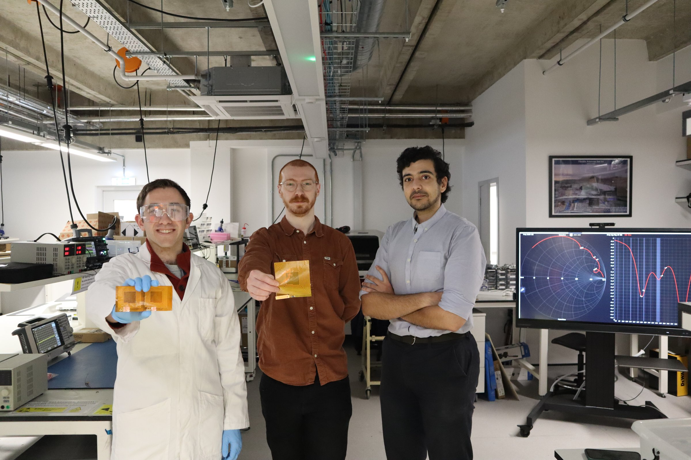

Connecting GREEN electronics research with policy, professional communities, industry and the public.

Policy Engagement
We share practical evidence on sustainable electronics, wireless systems and the future of the semiconductor supply chain. We were pleased to host an MP visit to demonstrate wireless power, sensing and circular electronics in the lab.

IEEE and Professional Activities
The lab has won 3x IEEE Antennas and Propagation Society Fellowships/Scholarships and 2x IEEE MTT-S conference awards since 2024; our members take leadership positions across events such as the European Microwave Week (EuMW) and hosting major conferences in Glasgow. Our external community outreach is also supported by the IEEE Distinguished Microwave Lecturer (DML) programme, find out more below.

News, Media and Industry
Our research reaches wider audiences through collaborations, spin-out activity and media coverage: from wireless-powered therapeutics to battery-free sensing for rail and transport.